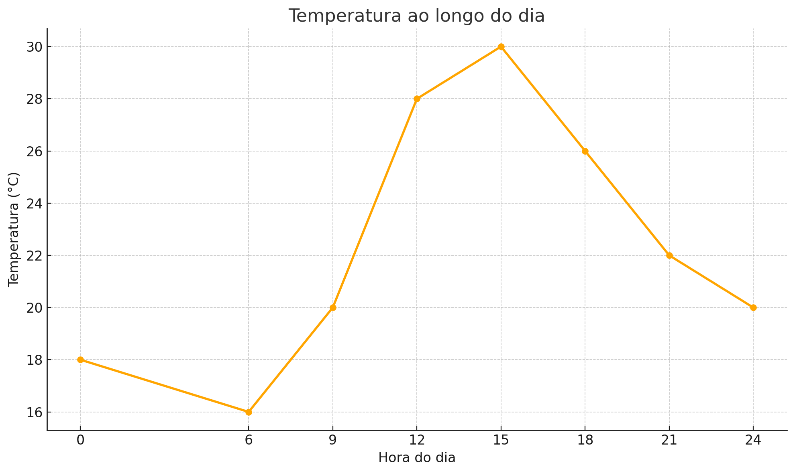

Fortalecendo o aprendizado com interatividade e recursos digitais
Descritor D20
Oque é
É a habilidade de ler um texto (geralmente uma situação do dia a dia, como economia, física, cotidiano etc.) e interpretar qual gráfico (entre opções) representa corretamente essa situação.
Oque Você Precisa Saber.
Ler o texto com atenção
Entenda o que está acontecendo: está aumentando, diminuindo, se mantém constante?
Identificar os elementos principais
Quem são as variáveis? (ex: tempo, distância, temperatura, dinheiro etc.)
O que muda e o que permanece fixo?
Observar o comportamento ao longo do tempo
A situação envolve crescimento? (o gráfico sobe)
Envolve queda? (o gráfico desce)
Fica constante? (o gráfico é uma linha reta paralela ao eixo x)
📊 Exemplos Comuns
"A temperatura aumentou durante a manhã e depois se manteve estável à tarde."
Gráfico sobe e depois segue reto.
"João gastou todo o dinheiro rapidamente e ficou sem nada o resto do mês."
Gráfico cai rápido e depois fica zerado.
"Um carro acelerou, manteve a velocidade e depois freou até parar."
Gráfico sobe, se mantém constante, e depois desce até zero.
Dicas
Sublinhe palavras-chave no texto: aumentou, caiu, manteve, parou, começou em zero, etc.
Preste atenção no eixo x e y dos gráficos (ex: x = tempo, y = dinheiro).
Use o bom senso: pense como a situação aconteceria na vida real.
Exemplo

Aqui está um gráfico que mostra a temperatura ao longo do dia. Você pode analisá-lo observando:
Quando a temperatura diminui (madrugada até início da manhã),
Quando ela aumenta (manhã até o meio da tarde),
E quando começa a diminuir novamente (final da tarde até a noite).